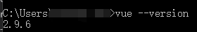
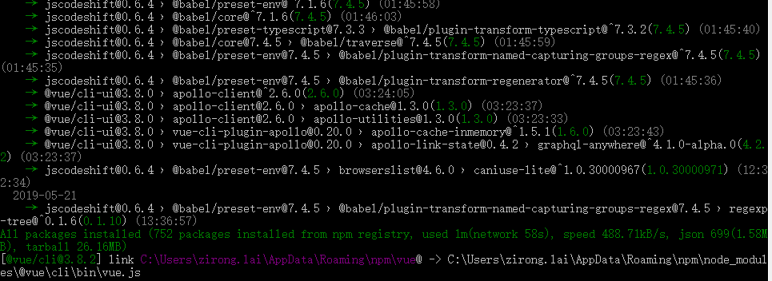
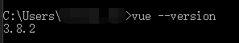
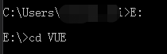
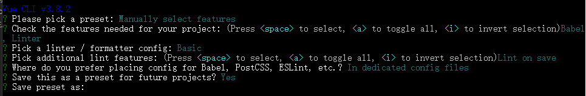
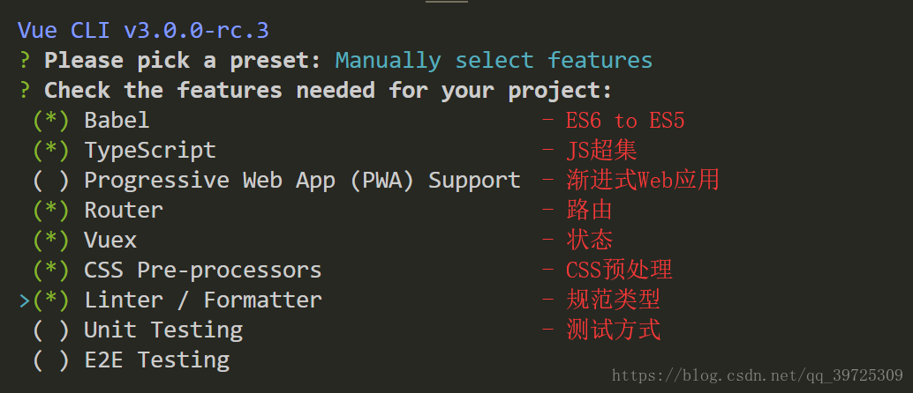
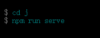
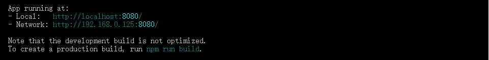
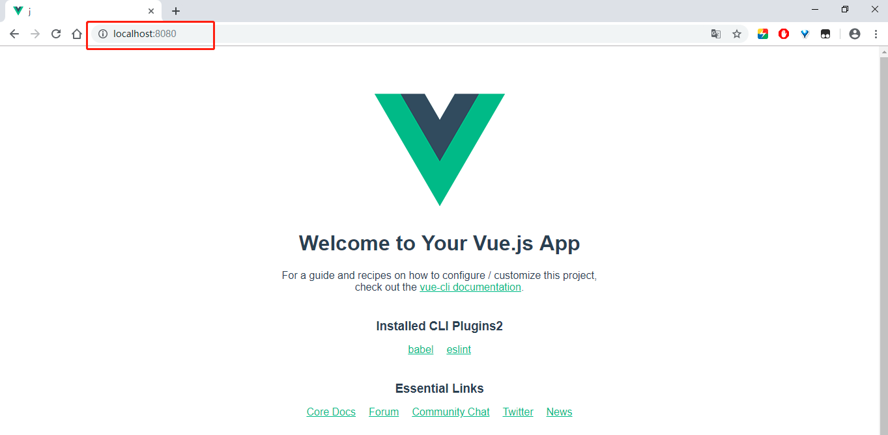

原文出处:本文由博客园博主Innershar提供。
原文连接:https://www.cnblogs.com/innershare/p/10936282.html
原文连接:https://www.cnblogs.com/innershare/p/10936282.html
本人主要做c# winform应用，刚接触vue，发现用vue做单页面应用的比较多，多页面的资料很少，特别是用vue3.0版本做多页面的资料，更少，所以自己整理一下，结合bootstrap和jquery，也可以给有需要的同行做个参考。
1.首先用 vue --version 命令查一下安装的vue-cli版本，要3.x版本，我原先装的是2.9.6版本的

2.卸载vue-cli,执行命令：cnpm uninstall -g vue-clinpm uninstall -g vue-cli ,执行完就好了
3.安装vue-cli3.x版本：cnpm install -g @vue/cli

4.安装完毕后，查看一下版本：默认装的最新版，3.8.2

5.切换到你的项目文件夹，准备创建项目吧，cmd命令操作就好了

6.执行 vue create <项目名称>创建项目吧，我这里直接用j做测试好了

7.新版的项目创建，会有选项可以配置，这里就不做赘述，百度有哈，一路默认回车也可以

从别人那里看到的配置图，可以参考：

8.项目安装完了会有如下提示

9.执行cd j 跳转到项目路径内
10.执行 npm run serve 命令，即可启动服务

可以看到有两个地址，第一个是用于本地测试，第二个是用于局域网测试，复制其中一个到浏览器运行即可。

先写这么多，可以关注后续的更新哈